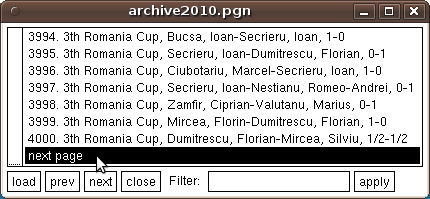

|
|
|  |
This version fixes some bugs found in 4.5.2. Below is a quick list of the changes. Note that the paging of the XBoard Game List (illustrated by the screenshot on the left) is a change that is really a bit more involved than what we would like to do in a stable version. But the bug was so severe that we decided to chance it. |